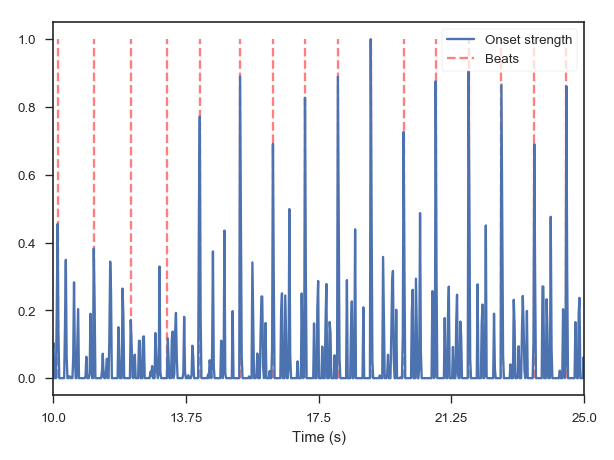

librosa.beat.beat_track¶
-
librosa.beat.beat_track(y=None, sr=22050, onset_envelope=None, hop_length=512, start_bpm=120.0, tightness=100, trim=True, bpm=None)[source]¶ Dynamic programming beat tracker.
- Beats are detected in three stages, following the method of [R3131]:
- Measure onset strength
- Estimate tempo from onset correlation
- Pick peaks in onset strength approximately consistent with estimated tempo
[R3131] Ellis, Daniel PW. “Beat tracking by dynamic programming.” Journal of New Music Research 36.1 (2007): 51-60. http://labrosa.ee.columbia.edu/projects/beattrack/ Parameters: y : np.ndarray [shape=(n,)] or None
audio time series
sr : number > 0 [scalar]
sampling rate of y
onset_envelope : np.ndarray [shape=(n,)] or None
(optional) pre-computed onset strength envelope.
hop_length : int > 0 [scalar]
number of audio samples between successive onset_envelope values
start_bpm : float > 0 [scalar]
initial guess for the tempo estimator (in beats per minute)
tightness : float [scalar]
tightness of beat distribution around tempo
trim : bool [scalar]
trim leading/trailing beats with weak onsets
bpm : float [scalar]
(optional) If provided, use bpm as the tempo instead of estimating it from onsets.
Returns: tempo : float [scalar, non-negative]
estimated global tempo (in beats per minute)
beats : np.ndarray [shape=(m,)]
frame numbers of estimated beat events
Note
If no onset strength could be detected, beat_tracker estimates 0 BPM and returns an empty list.
Raises: ParameterError
if neither y nor onset_envelope are provided
See also
Examples
Track beats using time series input
>>> y, sr = librosa.load(librosa.util.example_audio_file())
>>> tempo, beats = librosa.beat.beat_track(y=y, sr=sr) >>> tempo 129.19921875
Print the first 20 beat frames
>>> beats[:20] array([ 461, 500, 540, 580, 619, 658, 698, 737, 777, 817, 857, 896, 936, 976, 1016, 1055, 1095, 1135, 1175, 1214])
Or print them as timestamps
>>> librosa.frames_to_time(beats[:20], sr=sr) array([ 0.093, 0.534, 0.998, 1.463, 1.927, 2.368, 2.833, 3.297, 3.762, 4.203, 4.667, 5.132, 5.596, 6.06 , 6.525, 6.989, 7.454, 7.918, 8.382, 8.847])
Track beats using a pre-computed onset envelope
>>> onset_env = librosa.onset.onset_strength(y, sr=sr, ... aggregate=np.median) >>> tempo, beats = librosa.beat.beat_track(onset_envelope=onset_env, ... sr=sr) >>> tempo 64.599609375 >>> beats[:20] array([ 461, 500, 540, 580, 619, 658, 698, 737, 777, 817, 857, 896, 936, 976, 1016, 1055, 1095, 1135, 1175, 1214])
Plot the beat events against the onset strength envelope
>>> import matplotlib.pyplot as plt >>> hop_length = 512 >>> plt.figure() >>> plt.plot(librosa.util.normalize(onset_env), label='Onset strength') >>> plt.vlines(beats, 0, 1, alpha=0.5, color='r', ... linestyle='--', label='Beats') >>> plt.legend(frameon=True, framealpha=0.75) >>> # Limit the plot to a 15-second window >>> plt.xlim([10 * sr / hop_length, 25 * sr / hop_length]) >>> plt.xticks(np.linspace(10, 25, 5) * sr / hop_length, ... np.linspace(10, 25, 5)) >>> plt.xlabel('Time (s)') >>> plt.tight_layout()
